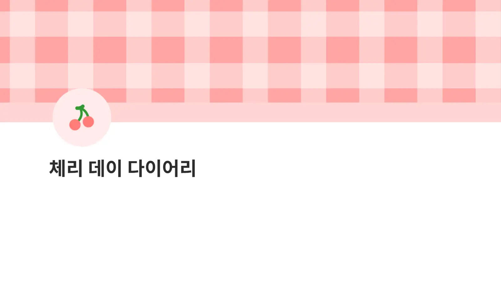
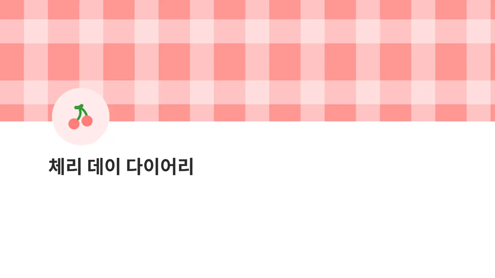
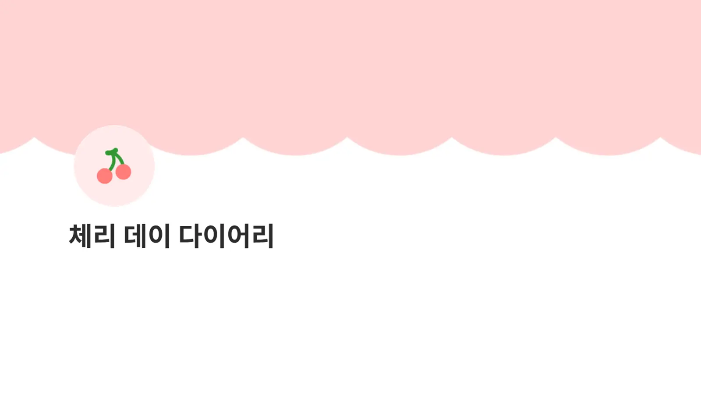
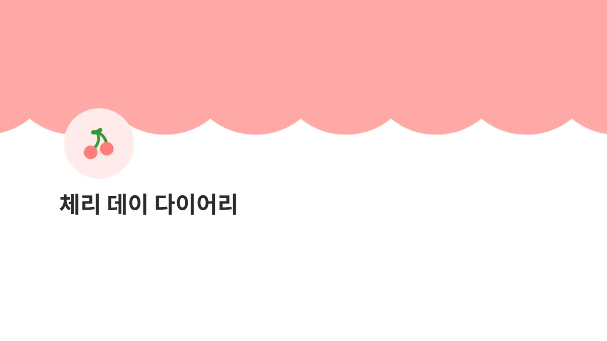

#마스킹테이프
#체크패턴
#체리
체리 데이 다이어리
상큼한 체리와 따뜻해 보이는 깅엄 체크의 조합🍒
내 마음대로 조합해서 나만의 노션 다이어리를 만들어 보세요.
좌우로 스와이프하여 확인하세요
풍성하게 꽉 채운 구성품 안내
🖼️
4개
테마 커버 이미지
✨
2개
페이지 아이콘
🎀
58개
이모지
💻
1개
노션 템플릿
세트 전체 구성
미리보기




01. Main Covers
페이지의 분위기를 결정하는 커버
파스텔 핑크와 생기 있는 살몬 핑크가 어우러져 따뜻한 무드를 연출해요. 메인 커버, 갤러리 보기 커버로 적용해 나만의 특별한 일기장을 만들어보세요.
02. Page Icons
심플한 체리 아이콘
노션 페이지에 귀여운 체리를 얹어 보세요. 커버와 함께 쓰면 귀여움이 더해져요.
03. Emojis
조합하며 꾸밀 수 있는 이모지
다양한 이모지들을 요리조리 조합해서 노션 페이지를 꾸며보세요! 체크무늬, 사선 패턴, 체리 등 다양한 이모지가 준비되어 있습니다.
노션 꾸미기 가이드 포함
아이콘은 어떻게 바꾸나요? 커버는 어떻게 넣죠? 걱정하지 마세요! 초보자도 쉽게 따라 할 수 있는 다꾸 적용 가이드가 동봉되어 있습니다.
먼저 꾸며본 분들의 리뷰
자주 묻는 질문 (FAQ)
구매 전 궁금하신 점을 미리 확인해 보세요.
Q. 아이패드나 모바일에서도 적용이 가능한가요?
A.아이패드, 모바일에서도 적용할 수 있지만 기기별로 기능의 한계가 있습니다. 노션 꾸미기는 데스크톱(PC)로 하는 것을 추천해요.
Q. 구매하면 파일은 어떻게 받나요?
A.하단의 '구매하러 가기' 버튼을 누르시면 상품 결제 페이지로 이동합니다. 해당 페이지에서 결제 완료 직후, 파일은 자동으로 구매자의 이메일로 전달됩니다.
Q. 결제 후 환불이 가능한가요?
A. 디지털 다운로드 상품의 특성상 파일이 다운로드 된 이후에는 교환 및 환불이 불가능합니다. 구매 전 구성을 꼼꼼히 확인해 주세요.
Q. 구매한 파일의 저작권 및 사용 범위는 어떻게 되나요?
A. 본 상품은 저작권법의 보호를 받으며, 아래의 규정을 반드시 지켜주셔야 합니다.
- 개인 용도로만 사용 가능합니다.
- 구매자 본인 계정에서만 사용 가능합니다.
- 원작자의 동의 없는 2차 가공 및 재배포를 금지합니다.
- 상업적 사용은 절대 불가합니다.
- 파일 공유(다운로드 링크 전달 포함)를 금지합니다.
- 템플릿/파일을 NFT·AI 학습용 데이터로 사용할 수 없습니다.
- 비슷한 구성, 소스 코드, 이미지를 그대로 재사용하거나 판매하는 것을 금지합니다.
노션 꾸미기 추천 꿀팁
노션 꾸미기가 막막할 때 읽어보세요✨